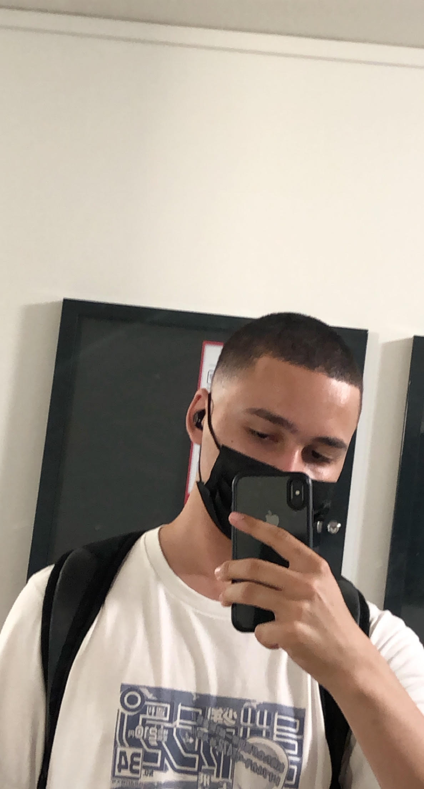

À propos
Frederick Toufik
Je suis un étudiant en informatique, de 22 ans. J'ai actuellement 3 projets finis a mon actif,
et mon objectif est d'étendre mon panel de compétences en développement tout en répondant aux besoins
des clients
Télecharger CV
----------
Compétences
HTML, CSS, PHP, MySQL, Photoshop, C++, CamL, Python, Javascript, NodeJS, Wordpress , Blender, Photoshop, Premiere PRO, Unity, Linux, Windows, Suite office, VBA
Cursus Scolaire
Baccalauréat STMG Option Informatique, Mention AB
Licence Mathématique Informatique (L2)
BTS SIO Option SLAM - En cours
Certificats
EF SET English Certificate 68/100 (C1 Advanced)
RefResponsive Web Design freeCodeCamp Certification
Ref